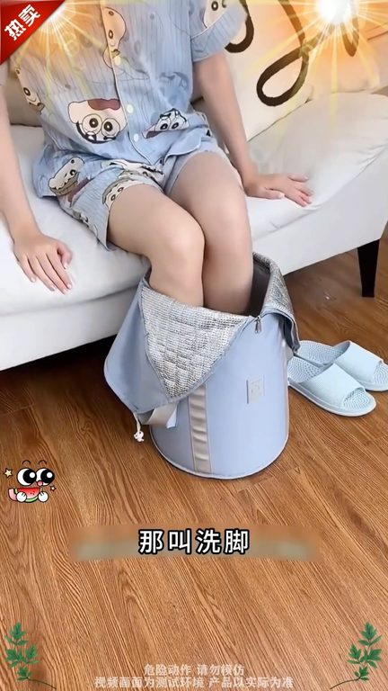
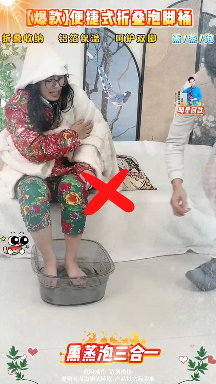
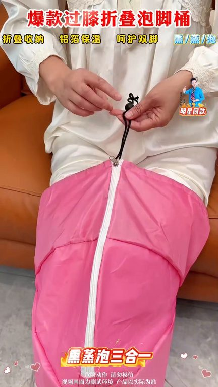

TOP 1 · 代表素材深度拆解
核心放量 强点击
视频为原始素材 HTTPS 链接；点击后加载，建议在网络环境良好时播放。
29.0万素材消耗
3.27%CTR
28.2%类目消耗占比
+0.98pp较类目均值
表现判断
该素材是类目内第 1 名，属于“核心放量”；CTR 高于类目均值。消耗体现承接规模，CTR 体现首屏与定向效率，两项应结合判断，不能仅以单指标下结论。
表达标签
口播三段式证据
开场钩子语人三福天一直泡脚会发生什么呢泡脚可以杀死女性90%的问题你知道连续泡脚有多厉害吗坚持泡上一个月你就不得不佩服老祖宗的智慧好多人都知道泡脚的好处却不知道泡脚的时候搭配花椒才是女人的好搭搭
中段论证和7天免费使用第一次用这款泡脚筒的人千万做好心理准备我怕你用完绝的之前的脚都败泡了我妈就这么泡了一段时间我爸说自己也想买一个你知道每天泡脚的好处有多少吗既然还有人浑身想放松的时候花大几百去足运点泡脚而我聪明的媳妇早就在家用上这个三合一过吸泡脚筒了它可不是普通的泡泡脚压而是能够泡脚蒸腿的保温泡脚筒自从用了它就像每天给腿蒸桑拿一样但是还有多少国人不知道泡脚筒有四…
结尾转化就是这款保温泡脚筒再加用了一段时间真是后悔没有早点买它采用铝箔保温材质五层加厚所温加高加深防清鞋的设计泡脚的同时还能给腿不勋蒸蒸拿今天下单就送三十袋泡脚包自己泡舒服了别忘了给父母也带上一个现在厂家十周年惦亲送福利千万不要错过了
有效点
- CTR 3.27% 高于类目均值 2.30%，开场或人群指向具备点击优势
- 包含使用或实测表达，能够把抽象卖点转化为可感知证据
迭代动作
- 保留当前高效钩子，复制 3 个变量版本：人物、首句和首帧分别单变量测试
- 视频时长偏长，建议剪出 30–45 秒短版，仅保留钩子、两项证据和一次 CTA
- 促销口径与资质信息保持同屏可验证，结尾只保留一个明确行动指令
合规关注

钩子建立 · 4.9s
场景/问题展开 · 36.6s

卖点证据 · 84.3s

转化收口 · 116.1s
查看完整口播摘要
语人三福天一直泡脚会发生什么呢泡脚可以杀死女性90%的问题你知道连续泡脚有多厉害吗坚持泡上一个月你就不得不佩服老祖宗的智慧好多人都知道泡脚的好处却不知道泡脚的时候搭配花椒才是女人的好搭搭从现在到三福天每晚睡前要做的事情就是泡脚不过这样泡脚是没有意义的还得用上它是真舍不得卖呀这也太便宜了幸亏昨天没买今天厂家周年轻大厨老板娘带着泡脚筒的超值福利来了现在下单就送30袋泡脚包和7天免费使用第一次用这款泡脚筒的人千万做好心理准备我怕你用完绝的之前的脚都败泡了我妈就这么泡了一段时间我爸说自己也想买一个你知道每天泡脚的好处有多少吗既然还有人浑身想放松的时候花大几百去足运点泡脚而我聪明的媳妇早就在家用上这个三合一过吸泡脚筒了它可不是普通的泡泡脚压而是能够泡脚蒸腿的保温泡脚筒自从用了它就像每天给腿蒸桑拿一样但是还有多少国人不知道泡脚筒有四选四不选第一不要选这种体积大又笨重的浪费水不说还搬不动要选这种小小便携的泡一次只需要几杯水睡前泡泡脚你根本想象不到会有多舒服第二不要买这种不稳容易挡的要买这种新升级防清鞋的里面装满水左右摇晃也不会到第三不要买这种老师的泡脚筒啊不能保温泡一会水就凉了要买这种五层加厚加高的设计拉练一拉能够长久保温的第四不要再去足玉殿泡脚了一次就要好几百要选这种能重复使用的大人小孩都能用就是这款保温泡脚筒再加用了一段时间真是后悔没有早点买它采用铝箔保温材质五层加厚所温加高加深防清鞋的设计泡脚的同时还能给腿不勋蒸蒸拿今天下单就送三十袋泡脚包自己泡舒服了别忘了给父母也带上一个现在厂家十周年惦亲送福利千万不要错过了